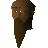

Edmond

| Config name | edmond |
| NPC id | 714 |
| Combat level | hidden |
| Options | Talk-to |
| Wander range | 5 tiles from spawn |
| Defined in | scripts/quests/quest_elena/configs/edmond.npc |
Edmond
A local civilian.
Show all 2 spawns on the world map → Open in knowledge graph →
Locations
| Area | Coordinates | Level | Count | Map |
|---|---|---|---|---|
| Combat Training Camp | 2568, 3334 | 0 | 1 | view |
| West Ardougne (underground) | 2535, 9719 | 0 | 1 | view |
Dialogue
PlayerHello old man.
The man looks upset.
PlayerWhat's wrong?
EdmondI've got to find my daughter. I pray that she is still alive...
PlayerWhat's happened to her?
Edmond's a missionary and a healer. Three weeks ago she managed to cross the Ardougne wall.
EdmondNo one's allowed to cross the wall in case they spread the plague, but after hearing the screams of suffering, she felt she had to help.
EdmondShe said she'd be gone for a few days, but we've heard nothing since.
PlayerTell me more about the plague.
EdmondThe mourners can tell you more than me, they're the only ones allowed to cross the border. I do know the plague is a horrible way to go... That's why felt she had to go help.
PlayerCan I help find her?
EdmondReally, would you? I've been working on a plan to get over the wall, but I'm too old and tired to carry it through.
EdmondIf you're going over, the first thing you'll need is protection. My wife made a special gasmask for with rubbed into it.
Edmondhelp repel the virus. We need some more though...
PlayerWhere can I find these ?
EdmondThe only place I know is McGrubor's Wood to the north.
PlayerOkay, I'll go get some.
PlayerI'm sorry, I have to go.
EdmondOkay, then, goodbye.
PlayerWell, good luck finding her.
PlayerHello Edmond.
EdmondHave you got the ?
PlayerSorry, I'm afraid not.
EdmondYou'll probably find them in McGrubor's Wood to the north.
PlayerYes, I have some here.
EdmondTake them to my wife .
PlayerHi , I've got the gas mask now.
EdmondGood stuff, now for the digging. Beneath are the Ardougne sewers. There you'll find access to West Ardougne.
EdmondThe problem is the soil is rock hard. You'll need to pour on some buckets of water to soften it up. I'll keep an eye out for the mourners.
Player, I can't get through to West Ardougne! There's an iron grill blocking my way. I can't pull it off alone.
EdmondIf you get some rope you could tie to the grill, then we could both pull it from here.
PlayerI've tied the other end of this rope to the grill.
gets a good grip on the rope. Together you tug the rope. You hear a clunk as you both fly backwards...
EdmondThat's done the job.
EdmondRemember to always wear the gasmask, otherwise you'll die over there for certain... Please bring my Elena back safe and sound.
PlayerHello.
EdmondHave you found yet?
PlayerNot yet, it's a big city over there.
EdmondI hope it's not too late.
EdmondThank you, thank you! beat you back by minutes. Now I said I'd give you a reward. What can I give you as a reward I wonder? Here take this magic scroll, I have little use for it but it may help you.
EdmondNow I'd recommend you go and see Elena. She'll want to thank you herself. She lives in the house opposite ours.
PlayerHello there.
EdmondAh hello. Thank you again for rescuing my daughter.
PlayerDo you have any more of those scrolls?
EdmondBut you've already got one! It's in your bank.
EdmondYes, here you go.
PlayerNo problem.
Quests
Referenced in scripts
scripts/quests/quest_elena/scripts/alrena.rs2scripts/quests/quest_elena/scripts/edmond.rs2scripts/quests/quest_elena/scripts/mourner.rs2scripts/quests/quest_elena/scripts/sewerpipe.rs2